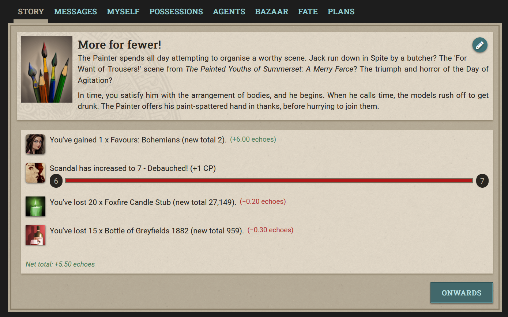
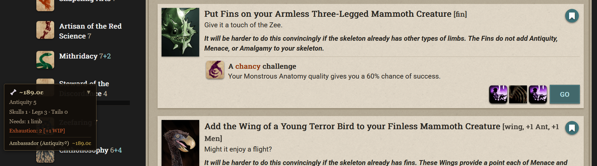
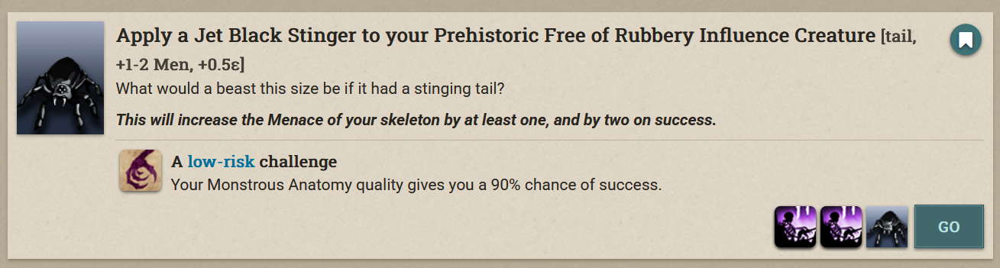
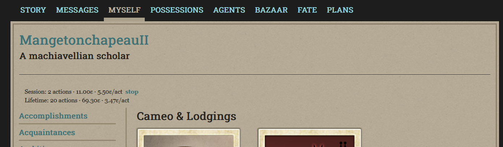
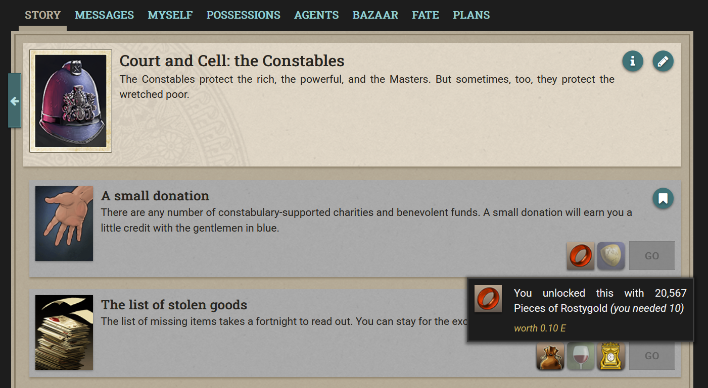
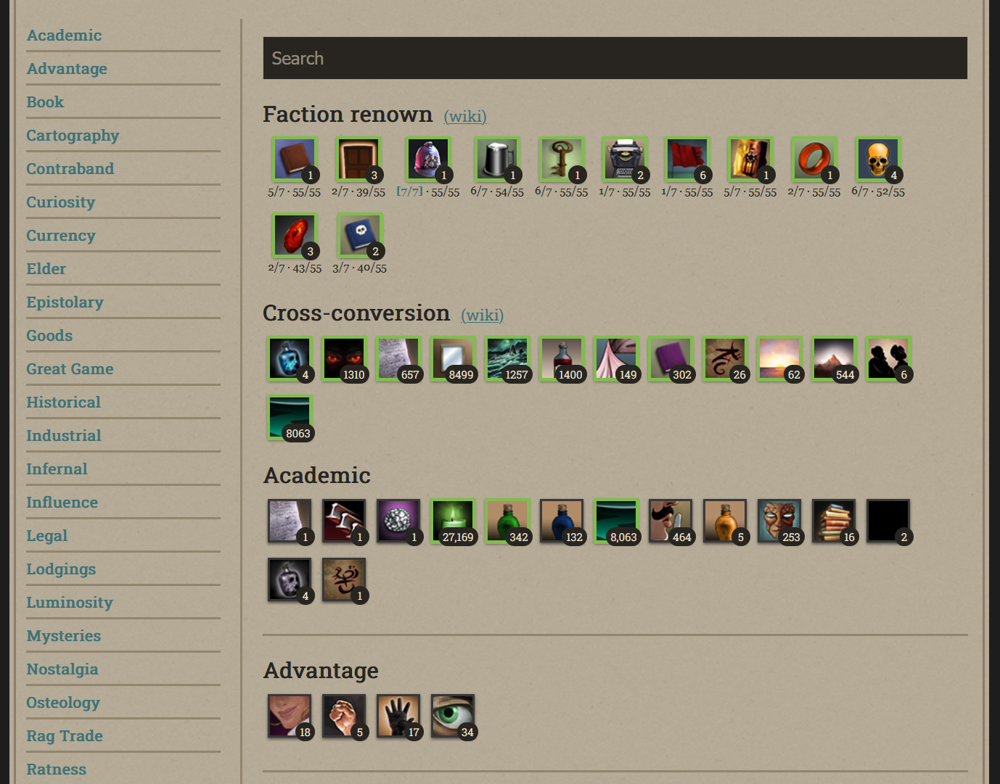
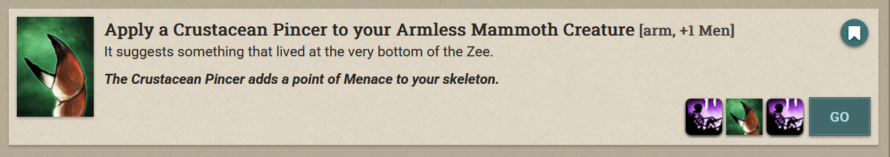
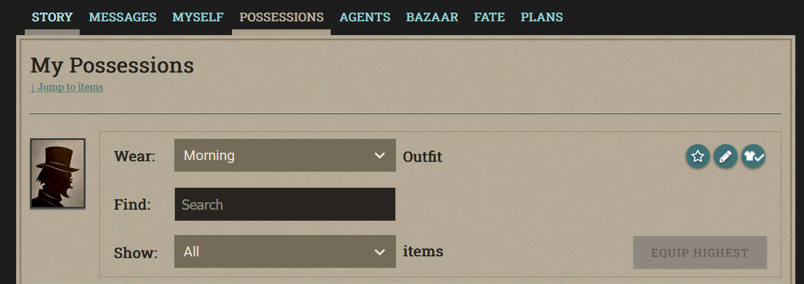

Quality of Life improvements for Fallen London.
I lost my mind so you could keep yours.
What's included

The Bone Market is Fallen London's most complex profit system. I lost my mind so you could keep yours, and built a live Bone Market dashboard, guidance and warnings to avoid painful actions.
As you build your skeleton, a live panel tracks every quality: Antiquity, Amalgamy, Menace, Implausibility, and limb counts. The top five eligible buyers are ranked by echo value and recalculated after every bone you add. Weekly exhaustion is factored in automatically — so you always see the real payout, not the theoretical maximum.
Each bone is annotated with the attribute points it contributes, so you always know whether that Horned Skull pushes Menace over the threshold before you commit to it.


Every item gain and loss annotated with its echo value, directly in the action results. Net total shown after the last priced item — so you always know exactly what just happened to your wallet.

Real-time Echoes Per Action — session and lifetime. Know your true efficiency, not the Neath's polished version of it.

Echo cost tooltip on items needed for a story — shown on quality requirement icons before you click a choice.

All faction items at a glance — favours/7 and renown/55 for every faction, without navigating deep into Possessions.
The T3 carousel cycles 13 items, 4 of which generate Making Waves. The bar shows live stock counts for every step — MW-producing items glow, depleted steps grey out. See exactly where you stand in the cycle before committing an action.

Limb types and attribute counts updated as you build the skeleton — every bone annotated, every threshold visible.

A one-click link below the Possessions heading skips past the renown and conversion bars straight to your inventory. Small change, big difference on mobile.
Click "Get for Firefox" and confirm the browser prompt. One click, no account required.
Navigate to fallenlondon.com, or refresh if you already have it open. That's it.
Every feature activates automatically. No settings panel, no accounts, no configuration needed.
Every feature works on mobile. Sticky panels, tap-friendly overlays, responsive layout — optimized for the phone underground.
Firefox for Android 109+The Companion reads the game's own API responses. It never sends a request to api.fallenlondon.com from outside the game, never triggers an action, never touches your account. 100% client-side. 100% open source.
Will this get my account banned?
No. The extension never automates actions, never sends requests to Failbetter's servers from outside the game, and only modifies your local browser view. Failbetter explicitly permits client-side quality-of-life modifications.
Does it automate anything?
Nothing. Every action in the game is still taken manually by you. The extension reads the game's own API responses and displays information — it cannot click, type, or perform any action on your behalf.
Does it work on mobile Firefox?
Yes — Firefox for Android is the primary development target. Every feature is designed and tested for mobile first.
How do I know the extension is safe?
The source code is fully open on GitHub. The extension requests only the storage permission (to save your EPA data between sessions) and has no network permissions — it cannot make requests to any server.
Browse the source, file an issue, or fork it. Pull requests welcome.
View on GitHub →